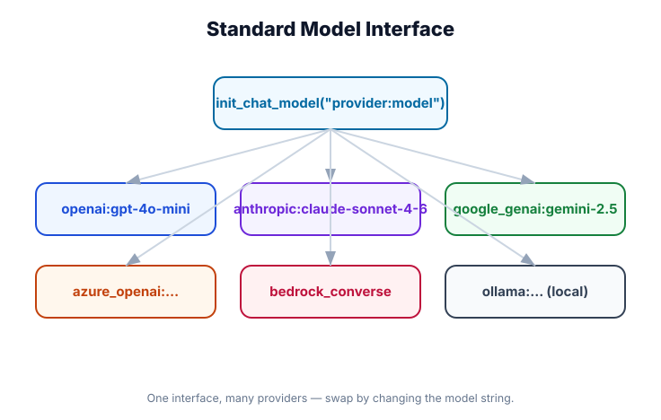

Chat Models
What you'll learn: How to initialize chat models with init_chat_model(), the provider:model-name string format, key parameters and what they control, how to use the same model directly (without an agent), and how to add tools and structured output at the model level.

↗ Open full size · ⬇ Edit in Excalidraw — labels use real LangChain classes.
What Is a Chat Model?
A chat model is the reasoning engine of your agent — the LLM that receives a list of messages and returns a response. In LangChain, all chat models implement the same interface, so swapping providers is a one-line change.
Think of a chat model like a specialized contractor. You can hire a general contractor (GPT-4o), a specialist (Claude for long documents), or a cost-effective option (Gemini Flash for high-volume tasks). They all speak the same language (messages in, message out) — you just swap who's on the job. LangChain is the project manager that knows how to talk to any of them.
Initializing a Model: init_chat_model()
This is the primary way to create chat models in LangChain v1.0:
from langchain.chat_models import init_chat_model
# Basic usage — provider:model-name format
model = init_chat_model("openai:gpt-4o-mini")
# With parameters
model = init_chat_model(
"openai:gpt-4o",
temperature=0.7, # creativity (0=deterministic, 1=creative)
max_tokens=4096, # max output length
timeout=30, # seconds before giving up
)
# Works the same for any provider:
model = init_chat_model("anthropic:claude-3-5-sonnet-20241022")
model = init_chat_model("google_genai:gemini-2.0-flash")
model = init_chat_model("ollama:llama3.2") # local modelThe Model String Format
The format is always "provider:model-name". The provider prefix tells LangChain which package to use. Click a provider to see its models:
# General purpose
model = init_chat_model("openai:gpt-4o") # Latest flagship
model = init_chat_model("openai:gpt-4o-mini") # Fast + cheap, great for tools
model = init_chat_model("openai:gpt-4-turbo") # Previous gen
# Reasoning models (slow, expensive, highly capable)
model = init_chat_model("openai:o3-mini") # Efficient reasoning
model = init_chat_model("openai:o3") # Full reasoning
# Note: o3/o1 models use reasoning_effort param instead of temperature
model = init_chat_model("openai:o3-mini", reasoning_effort="medium")# Claude 3.5 family (excellent for long contexts, code)
model = init_chat_model("anthropic:claude-3-5-sonnet-20241022") # Balanced
model = init_chat_model("anthropic:claude-3-5-haiku-20241022") # Fast + cheap
# Claude 3 Opus (slower, most capable)
model = init_chat_model("anthropic:claude-opus-4-8")
# Extended thinking (visible reasoning tokens)
model = init_chat_model(
"anthropic:claude-3-5-sonnet-20241022",
thinking={"type": "enabled", "budget_tokens": 5000}
)# Gemini 2.0 family
model = init_chat_model("google_genai:gemini-2.0-flash") # Fast, cheap
model = init_chat_model("google_genai:gemini-2.0-flash-thinking") # With reasoning
model = init_chat_model("google_genai:gemini-1.5-pro") # Large context (2M tokens)# Run models locally (no API key needed)
# First: `ollama pull llama3.2` in terminal
model = init_chat_model("ollama:llama3.2")
model = init_chat_model("ollama:qwen2.5:14b")
model = init_chat_model("ollama:mistral")
# Custom base URL (for remote ollama servers)
model = init_chat_model("ollama:llama3.2", base_url="http://gpu-server:11434")# OpenRouter is a gateway: a single OPENROUTER_API_KEY reaches models from
# OpenAI, Anthropic, Google, Meta, and more. Model names are "vendor/model".
model = init_chat_model("openrouter:anthropic/claude-sonnet-4.5")
model = init_chat_model("openrouter:openai/gpt-4.1")
model = init_chat_model("openrouter:google/gemini-2.5-flash")
model = init_chat_model("openrouter:meta-llama/llama-4-maverick")
# The dedicated class exposes OpenRouter-specific params (provider routing, etc.)
from langchain_openrouter import ChatOpenRouter
model = ChatOpenRouter(model="anthropic/claude-sonnet-4.5", temperature=0)# AWS Bedrock
model = init_chat_model("bedrock:anthropic.claude-3-5-sonnet-20241022-v2:0")
# Mistral AI
model = init_chat_model("mistralai:mistral-large-latest")
# Azure OpenAI
from langchain_openai import AzureChatOpenAI
model = AzureChatOpenAI(azure_deployment="gpt-4o", api_version="2024-10-01")
# Groq (fast inference)
model = init_chat_model("groq:llama-3.3-70b-versatile")
# 50+ total providers — see: https://docs.langchain.com/oss/python/langchain/modelsProvider Spotlight: OpenRouter beta
OpenRouter is unusual: it isn't one provider, it's a unified gateway in front of many. With a single OPENROUTER_API_KEY you can reach OpenAI, Anthropic, Google, Meta and others — useful when you want to A/B different models without juggling four separate accounts and SDKs.
If init_chat_model is a universal remote, OpenRouter is a universal SIM card — one credential that roams across many networks. You change the "vendor/model" string and OpenRouter handles which backend actually serves the request.
Install the dedicated package, then use either the "openrouter:" string format or the ChatOpenRouter class:
# pip install -U langchain-openrouter
# export OPENROUTER_API_KEY=... (get one at openrouter.ai/settings/keys)
from langchain_openrouter import ChatOpenRouter
model = ChatOpenRouter(
model="anthropic/claude-sonnet-4.5",
temperature=0,
max_tokens=1024,
)
# Streaming uses the same standard API as every other chat model
for chunk in model.stream("Write a short poem about the sea."):
print(chunk.text, end="", flush=True)
# Tool calling, with_structured_output, and multimodal all work the same way too
model_with_tools = model.bind_tools([GetWeather])Because OpenRouter often has several upstream providers for the same model, you can steer routing — order, fallbacks, or sort by cost/throughput/latency:
model = ChatOpenRouter(
model="anthropic/claude-sonnet-4.5",
openrouter_provider={
"order": ["Anthropic", "Google"], # try these first
"allow_fallbacks": True, # then fall back to others
"sort": "throughput", # or "latency" / "price"
"data_collection": "deny", # skip providers that train on your data
},
)The package is beta and ships separately — it is not bundled with langchain (pip install langchain-openrouter). Set OPENROUTER_API_KEY, not OPENAI_API_KEY. Model strings need the vendor prefix ("anthropic/claude-sonnet-4.5", not "claude-sonnet-4.5"), and a model's available features (audio, video, PDF) depend on the underlying provider — check the OpenRouter models page.
Key Parameters
| Parameter | Type | Effect | When to set |
|---|---|---|---|
temperature |
float 0–2 | Controls randomness. 0 = deterministic. 1 = balanced. Higher = more creative/varied. | Default: 1.0. Set to 0 for tools/structured tasks. |
max_tokens |
int | Maximum output length in tokens. Prevents runaway responses. | Set when you need predictable cost or output length control. |
timeout |
int | Seconds before the request times out. | Set in production. Default varies by provider. |
max_retries |
int | Auto-retry on rate limits and transient errors. | Default: 2. Increase for production reliability. |
streaming |
bool | Force the underlying API into streaming mode. Usually managed by LangChain automatically. | Rarely set directly — use model.stream() instead. |
model_kwargs |
dict | Pass provider-specific params not covered by standard args. | For edge cases like seed, logprobs, provider extensions. |
Using the Model Directly
You don't always need an agent. A chat model can be used directly for simple tasks:
from langchain.chat_models import init_chat_model
from langchain_core.messages import HumanMessage, SystemMessage
model = init_chat_model("openai:gpt-4o-mini", temperature=0)
# Invoke with a list of messages
response = model.invoke([
SystemMessage("You are a concise technical writer."),
HumanMessage("Explain Python's GIL in one sentence."),
])
print(response.content)
# → The GIL (Global Interpreter Lock) is a mutex in CPython that prevents
# multiple threads from executing Python bytecode simultaneously, limiting
# true parallelism in CPU-bound tasks.
# Access metadata
print(response.usage_metadata)
# → {'input_tokens': 29, 'output_tokens': 42, 'total_tokens': 71}
print(response.response_metadata.get('model_name'))
# → gpt-4o-mini-2024-07-18Binding Tools to a Model
You can bind tools directly to a model (outside of an agent). This is useful when you want fine-grained control or are building custom workflows:
from langchain.chat_models import init_chat_model
from langchain.tools import tool
@tool
def get_weather(city: str) -> str:
"""Get the current weather for a city."""
return f"Sunny, 22°C in {city}" # mock implementation
model = init_chat_model("openai:gpt-4o-mini")
# Bind tools to the model
model_with_tools = model.bind_tools([get_weather])
# The model can now call the tool
response = model_with_tools.invoke("What's the weather in Tokyo?")
if response.tool_calls:
tool_call = response.tool_calls[0]
print(f"Tool: {tool_call['name']}, Args: {tool_call['args']}")
# → Tool: get_weather, Args: {'city': 'Tokyo'}
# Note: model.bind_tools() just adds the tool definitions to every request.
# The model can DECIDE to call a tool but won't actually execute it.
# create_agent() handles the full loop including execution.
# For direct model use, you need to execute tools yourself.Static vs. Dynamic Model Configuration
When using create_agent(), you can configure the model at creation time (static) or per-invocation (dynamic):
from langchain.agents import create_agent
from langchain.chat_models import init_chat_model
# STATIC — fixed at creation time
agent = create_agent(
model=init_chat_model("openai:gpt-4o", temperature=0.7),
tools=[...],
)
# DYNAMIC — model can change per call
# Pass a model string instead of an initialized model object
agent = create_agent(
model="openai:gpt-4o", # string, not object
tools=[...],
)
# Override per-invocation (useful for A/B testing, user-specific models)
result = agent.invoke(
{"messages": [...]},
config={"configurable": {"model": "anthropic:claude-3-5-haiku-20241022"}}
)
# Override temperature per call
result = agent.invoke(
{"messages": [...]},
config={"configurable": {"temperature": 0.0}}
)Dynamic model config is powerful when you want to: run the same agent with different models for evaluation, let users choose their preferred model, or use a cheap model for simple queries and an expensive one for complex reasoning. The agent code stays identical.
Multimodal Input (Images, Files)
Models that support vision can receive images as part of the message content:
from langchain.chat_models import init_chat_model
from langchain_core.messages import HumanMessage
model = init_chat_model("openai:gpt-4o") # vision-capable model
# Inline image (base64 or URL)
response = model.invoke([
HumanMessage(content=[
{"type": "text", "text": "What's in this image?"},
{
"type": "image_url",
"image_url": {"url": "https://example.com/chart.png"},
},
])
])
print(response.content)
# From local file (base64 encode it)
import base64
with open("chart.png", "rb") as f:
img_b64 = base64.b64encode(f.read()).decode()
response = model.invoke([
HumanMessage(content=[
{"type": "text", "text": "Describe this chart."},
{"type": "image_url", "image_url": {"url": f"data:image/png;base64,{img_b64}"}},
])
])OpenAI's o3/o1 and Anthropic's extended thinking models don't accept temperature the same way. For o3-mini, use reasoning_effort="low"|"medium"|"high". For Anthropic thinking, pass thinking={"type":"enabled", "budget_tokens": N}. Setting temperature on these models will either be silently ignored or throw an error depending on the version.
"openai:gpt-4o" works. "OpenAI:GPT-4o" does not. The provider prefix must match exactly: openai, anthropic, google_genai (note underscore!), ollama, groq, etc.
Real-World Use Case
🏗️ Multi-Model Pipeline with Cost Optimization
A document processing system uses three models strategically: google_genai:gemini-1.5-pro for ingesting 500-page PDFs (2M token context window), openai:gpt-4o-mini for classification tasks (cheap, fast), and anthropic:claude-3-5-sonnet-20241022 for final report generation (best writing quality). All three use the same create_agent() API — swap the model string and nothing else changes.
Use init_chat_model("provider:model-name"). Temperature 0 for tools/structured tasks, ~0.7 for creative work. Dynamic model config (passing a string to create_agent() instead of an object) lets you swap models per-call. The model interface is identical across all 50+ providers.